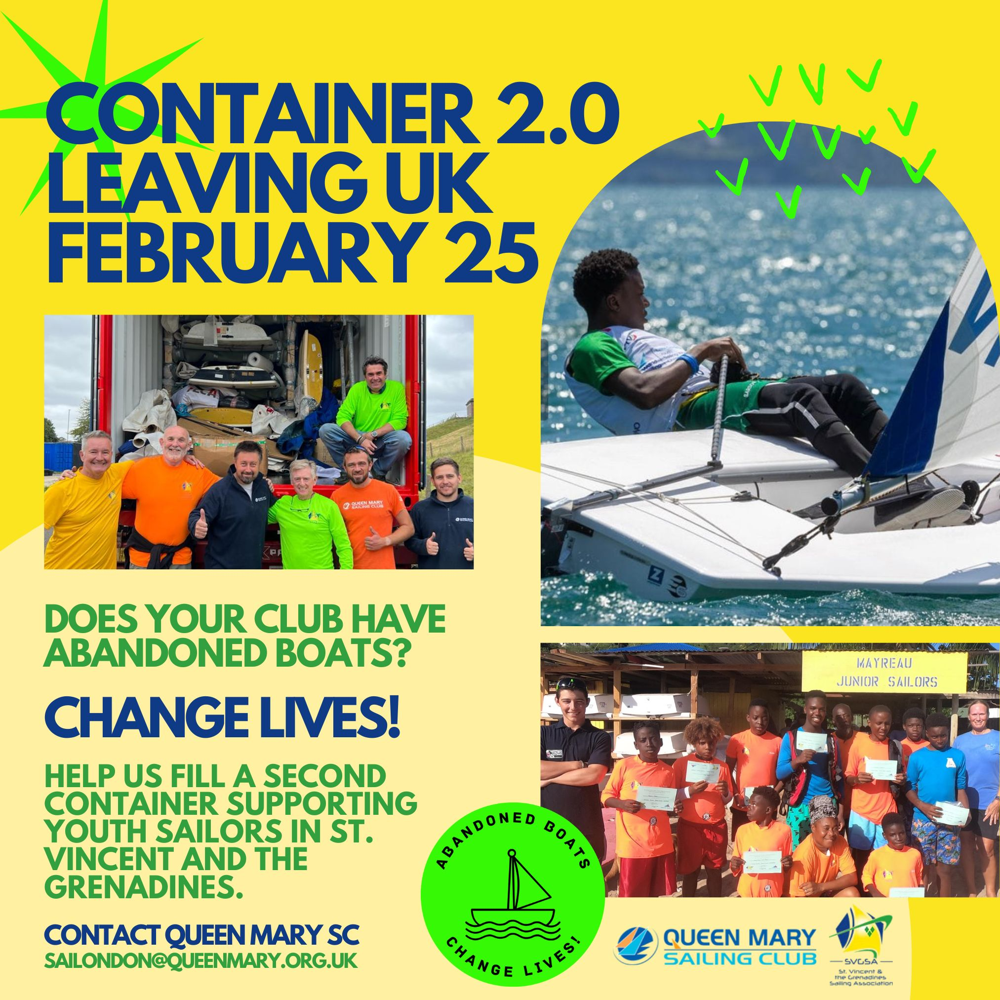
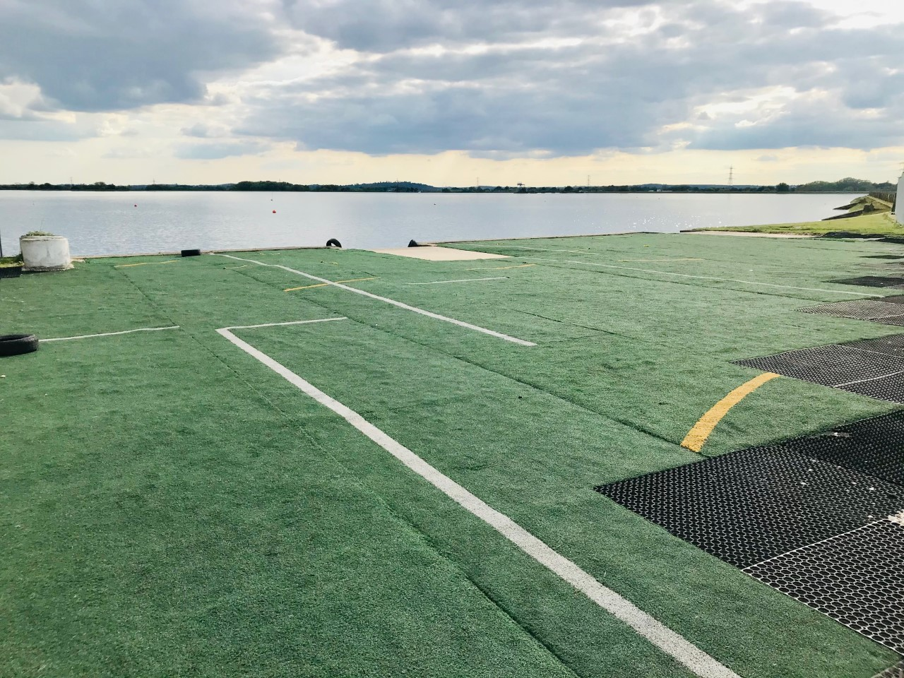
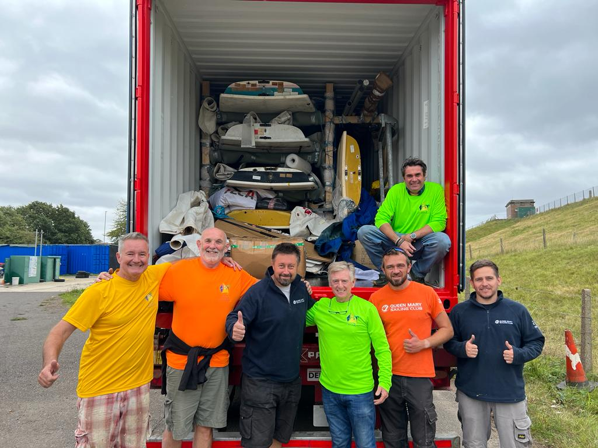

Abandoned Boats Change Lives - February 2025

Abandoned Windsurf kit and ILCA Boats Wanted - Email sailondon@queenmary.org.uk if you can help with donations!
...
Changing Lives for Youth Sailors in St. Vincent and the Grenadines
The first container of abandoned boats from the UK, sent in 2023, helped massively to boost youth sailing participation in St. Vincent and the Grenadines. The project is back with a second container and is calling for your help to get even more young people sailing!
With youth unemployment in St. Vincent and the Grenadines at a staggering 41%, initiatives offering practical skills and confidence are crucial. The rich maritime culture, once vibrant, is fading, with traditional boating skills nearly lost over two generations.
The St. Vincent and the Grenadines Sailing Association (SVGSA), aims to revive the love for sailing, offering fun, vocational training, and competitive opportunities.
Why Sailing?
Fun: Our sailing camps bring joy to hundreds of children across the islands, even amidst challenges like volcanic eruptions and hurricanes. These camps aren't just about learning to sail; they're about building community and preserving a cultural heritage.
Vocation: Programs like our yacht charter industry internship prepare young people for roles in customer interaction, yacht maintenance, and crew responsibilities. Our collaboration with World Sailing has even helped many teenage sailors become certified coaches.
Competition: With the likes of Scarlett Hadley and Isaiah Blackett representing SVG on the World stage, SVGSA's competitive edge is undeniable. Yet, we face a major hurdle: a severe shortage of boats and equipment, many of which are on their second or third life.
The Call to Action
This is where you come in. We are reaching out to sailors and sailing clubs who share our passion for the sailing. Your unused or neglected boats and windsurfers could breathe new life into our programs. In 2023, thanks to the initiative of UK sailor Guy Noble and the support of Queen Mary Sailing Club (QMSC), Rooster, SailingFast, ILCA Direct, and Kestrel Shipping, we received a shipment of preloved ILCA hulls that significantly boosted our capacity. The government of SVG, a strong advocate for our cause, waived import duties, further enabling our mission.
What We Need
We're gearing up for our next shipment in February 2025, and we're calling on the global sailing community to help. We seek:
Usable boats: ILCA, Optimist, windsurfers, and other classes suitable for training and competition (a boat for inclusive sailing would be amazing)
Spare parts and maintenance equipment
Sailing gear and accessories
Join Us
Tony Bishop, Sailing Secretary at Queen Mary Sailing Club (QMSC), highlighted the urgency of supporting SVGSA's initiative: "Time is tight for the container shipping window, so we're calling on everyone who can help! We all sadly have abandoned boats and boards at our clubs. These ideally need to be in OK condition to give SVGSA the very best chance to get on the water and build participation."
This appeal highlights a crucial opportunity for sailing communities to come together and make a meaningful impact by repurposing unused equipment to support growing participation in sailing.
Your contribution could transform lives, giving young people a chance to learn, compete, and work in the marine industry. It's not just about donating boats; it's about investing in the future of St. Vincent and the Grenadines.
Together, let's keep the spirit of sailing alive and thriving in these beautiful islands. Be a part of this meaningful journey—because the sea, after all, belongs to everyone.
Contact us today to make your donation or to learn more about how you can help.
- Jenny, SVG Sailing Association: svgsailingassociation@gmail.com
- Tony, Queen Mary Sailing Club: sailondon@queenmary.org.uk
Huge appreciation to UK sea freight company Kestrel Shipping who are again helping with the shipping, and Vincentian manufacturing company, ECGC, for their support and sponsorship.
Find out more at www.lovesailing.vc
QMSC's Environmental Strategy
The environmental impact that we are having on the Earth in recent times means it is becoming increasingly crucial that we are aware of this. Here at Queen Mary Sailing Club, we want to do as much as we can to lower our impact and ensure we are helping the environment. This is important for our members and any outside visitors on site.
QMSC are getting involved by doing the following
- Increasing recycling points around the sailing club - Wit the Big bottle bank for plastic bottles under the stairs
- Reduction in single-use plastic on site and in the caterers
- Upgrading lights to energy-efficient LED - Wind-power project in planning
- Promoting circular economy principles by ensuring suppliers use sustainable and recyclable materials. (World Sailing Policy)
- Sustainability teaching using the RYA's Green Blue Initiative - more details below.
- 'Diversion from Landfill’ for example, abandoned boats restored and donated to sailing projects, used sails remodelled into holdalls and waste football AstroTurf installed to create a safe windsurf rigging area.


The GreenBlue Initiative
This environmental awareness initiative was developed jointly by the RYA and the British Marine back in 2005. Since then they have had four main aims:
- Raising awareness amongst industry and users
- Reducing harmful discharges
- Reducing environmental disturbance
- Encouraging sustainable choices
Queen Mary Sailing Club supports all of their aims and by doing so is promoting a sustainable boating community. We invite you to join us!
Read more about what you can do here.